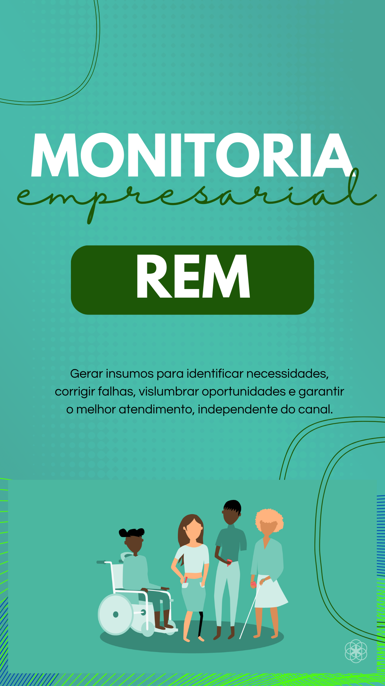

Monitoria empresarial

Além da nossa capacitação para as empresas, temos também a monitoria empresarial, na qual oferecemos palestras, para que ocorra a inclusão de colabores PCDs com mais facilidade e extinguindo preconceito criando um clima mais confortavel e digno para todos os colaboradores.
Torne os sonhos de seus colaboradores possíveis com a REM!